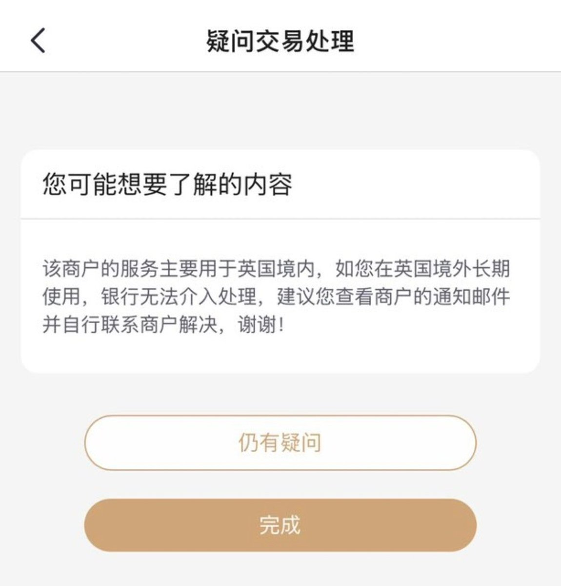
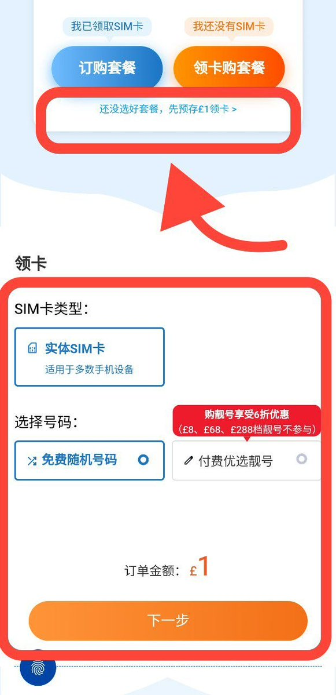
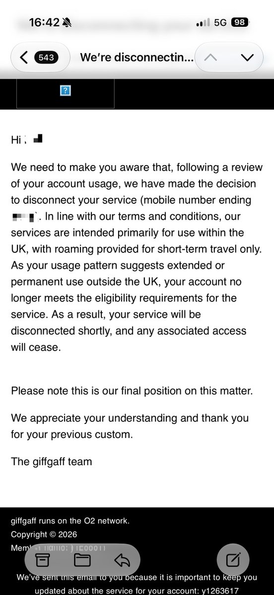

继Giffgaff清退海外用户并拒绝退款，不少使用招行外币信用卡完成首充的用户向招商银行提起争议处理，收到如下反馈：
该商户的服务主要用于英国境内，如您在英国境外长期使用，银行无法介入处理，建议您查看商户的通知邮件并自行联系商户解决，谢谢！
除此之外，CTExcel上线1GBP领实体卡活动，通过VoWiFi挂起打888激活后可使用PAC代码完成gg号码转入。反观隔壁CMLink不少推友反馈激活失败，原因未知。领实体卡后的激活步骤，烦请参考奶昔论坛上的帖子，领取链接见评论区可用「朋友推荐码CHQS」互相领3英镑。之前的半价码被代理商举报后下架，因此文章中的5折无法享受了
最后我想强调的是，不止CTExcel还有Voxi等值得保号的运营商。若你不想让O2公司得到你的余额，一个是我昨天分享的短信捐款，另一个是把「数据漫游」打开后看一部小电影，毕竟1GB要204英镑呢！
我就比较简单，拿到PAC代码（30天有效）先把gg余额消耗完毕，再去CTExcel携转完成过渡。
该商户的服务主要用于英国境内，如您在英国境外长期使用，银行无法介入处理，建议您查看商户的通知邮件并自行联系商户解决，谢谢！
除此之外，CTExcel上线1GBP领实体卡活动，通过VoWiFi挂起打888激活后可使用PAC代码完成gg号码转入。反观隔壁CMLink不少推友反馈激活失败，原因未知。领实体卡后的激活步骤，烦请参考奶昔论坛上的帖子，领取链接见评论区可用「朋友推荐码CHQS」互相领3英镑。之前的半价码被代理商举报后下架，因此文章中的5折无法享受了
最后我想强调的是，不止CTExcel还有Voxi等值得保号的运营商。若你不想让O2公司得到你的余额，一个是我昨天分享的短信捐款，另一个是把「数据漫游」打开后看一部小电影，毕竟1GB要204英镑呢！
我就比较简单，拿到PAC代码（30天有效）先把gg余额消耗完毕，再去CTExcel携转完成过渡。


